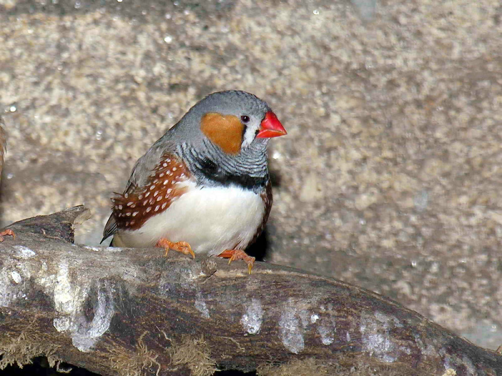

Las aves son una clase de animales pertenecientes al reino Animalia, el filo Chordata y el subfilo Vertebrata. Son organismos heterótrofos, aeróbicos, de sangre caliente y metabolismo acelerado. Son tetrápodos y bípedos.
El Gorrión común (Passer domesticus) es el pajaro mas comun en México, sin embargo, lo mismo le sucede a la mayor parte de las personas, ya que el gorrion comun es el ave silvestre de mayor distribucion en el mundo.